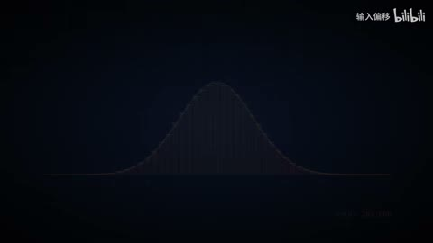
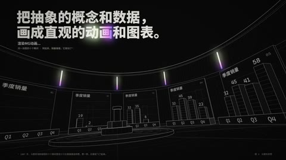
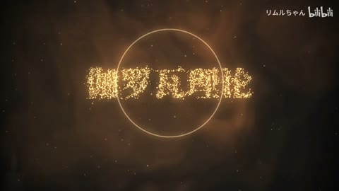

AI20 / 5—30秒
Opus5.5一轮对话直出：线性代数之美
箭头从原点发散，网格与蝴蝶曲线随矩阵变形，平行四边形示意面积后压成直线。
迁移提问：这条曲线或粒子变化解释了什么？观众能描述变化关系，还是只能说“很炫”？
手法专题 / 规则、用途与取舍
把可控规则变成可见变化；通过不变量、比例和相位建立秩序或空间。
概念解释、音乐可视化、抽象世界、图表、程序艺术。
符号无含义；空间复杂度替代概念清晰；将程序生成误等同于文生视频生成。
①写明对象和变量；②固定一个参照；③一次改变一个量；④检查遮挡/尺度；⑤加入标注；⑥事实内容另外核验。
规则几何易至中等；复杂shader与科学内容需专项核验。
基础机制已做13项原创演示，不等于本页所有复杂组合均已成片验证。
原机制演示 →AI20 / 5—30秒
箭头从原点发散，网格与蝴蝶曲线随矩阵变形，平行四边形示意面积后压成直线。
迁移提问：这条曲线或粒子变化解释了什么？观众能描述变化关系，还是只能说“很炫”？

AI22 / 20—38秒
骰子按结果落入列，36–38秒柱形和拟合曲线保持同版式，顶部投掷结果替换、总次数增长，随后淡出。
迁移提问：这条曲线或粒子变化解释了什么？观众能描述变化关系，还是只能说“很炫”？

AI50 / 8—16秒
线与半透明点云构成空间，亮度和密度帮助区分层次。
迁移提问：这条曲线或粒子变化解释了什么？观众能描述变化关系，还是只能说“很炫”？

AI12 / 82—86秒
图表屏幕沿弧面排列，镜头旋转／倾斜，光柱和柱状图保持空间对应，字幕锁在左上区域
迁移提问：这条曲线或粒子变化解释了什么？观众能描述变化关系，还是只能说“很炫”？

AI21 / 29—33秒
29秒金点覆盖旧字，30秒粒子逐渐组成中文标题，30.2起圆环扩大，31.1左右字面转连续明亮金色，32秒英文副题渐显。
迁移提问：这条曲线或粒子变化解释了什么？观众能描述变化关系，还是只能说“很炫”？
一个圆、一条线、一个参数做10秒清楚的关系演示，禁止无关粒子。
交付时保留基础版与加效果版，并写“增加了什么意义、损失了什么清晰度”。
使用观察与复盘表 →